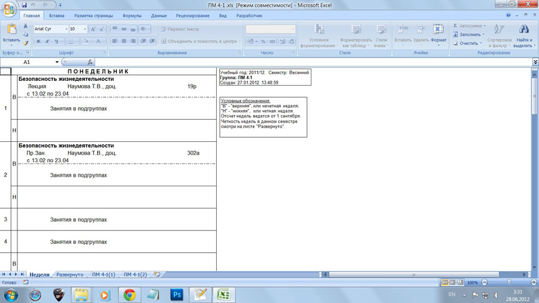
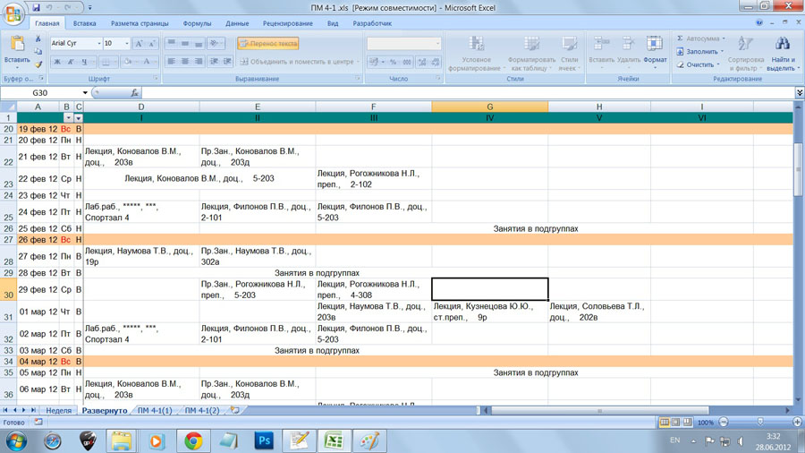
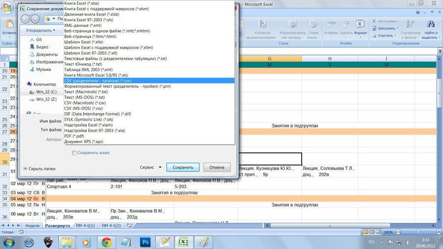
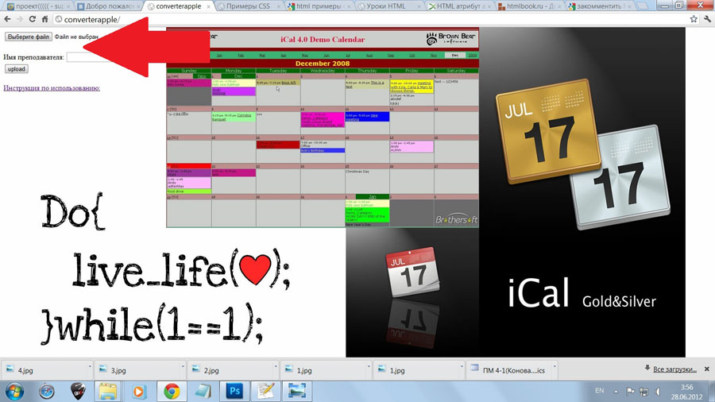
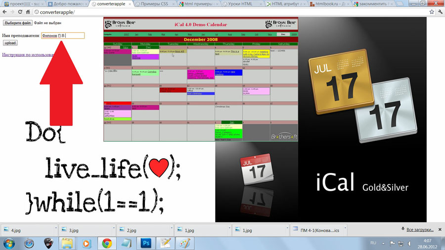
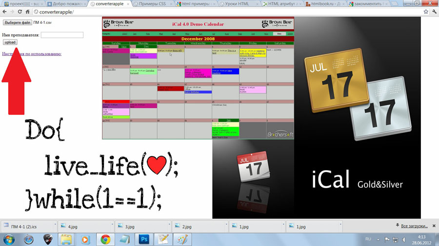

Для того, чтобы начать использование конвертера, необходимо подготовить ваш файл для работы.
Для этого необходимо открыть файл в Excel и открыть вкладку "Развернуто"


После этого нужно сохранить файл в формате .csv, где разделители являются запятыми, так, как это показано на рисунке.

Теперь с помощью формы загрузки (на картинке она изображена стрелочкой) нужно загрузить файл с расширением .csv на сервер.

Если Вам требуется расписание только одного преподавателя, введите его фамилию и инициалы так, как это показано на рисунке. Если это поле останется пустым, то будет календарь будет составлен с учетом расписания всех преподавателей.

Ну и жмем на кнопку загрузки календаря =)

Ну и если Вы это читаете, наверное, Вы догадываетесь, куда ведет ссылка "Инструкция по использованию" =)
При составлении расписания в формате Excel сдвоенные пары должны быть объединены в одну ячейку, но на практике выяснилось, что это не совсем так - было обнаружено, что пары вписаны в одну ячейку, а другая просто сдвинута до минимума. В таком виде невооруженному глазу это не заметно, но при разборе файла в .csv из за этого образуются пустые пары, что может ввести в замешательство как студентов, так и преподавателей =) К сожалению, отследить это программно не представляется возможным, поэтому будьте внимательны!
Надеемся, что наш конвертер сэкономит Вам немало времени! =)